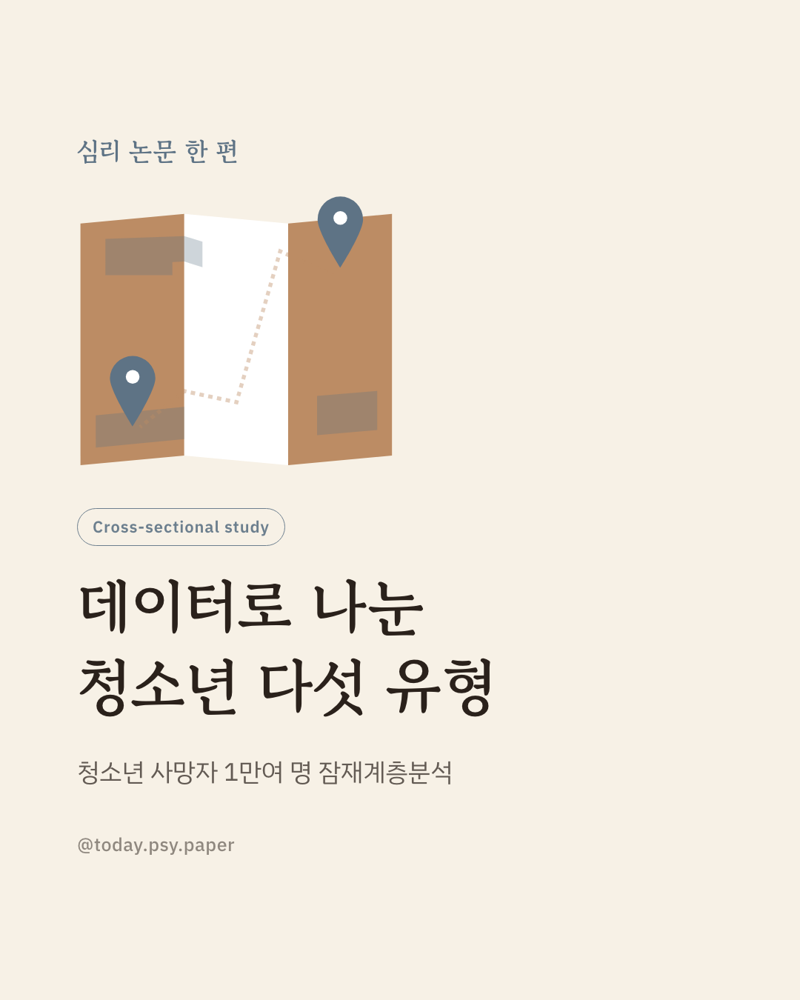
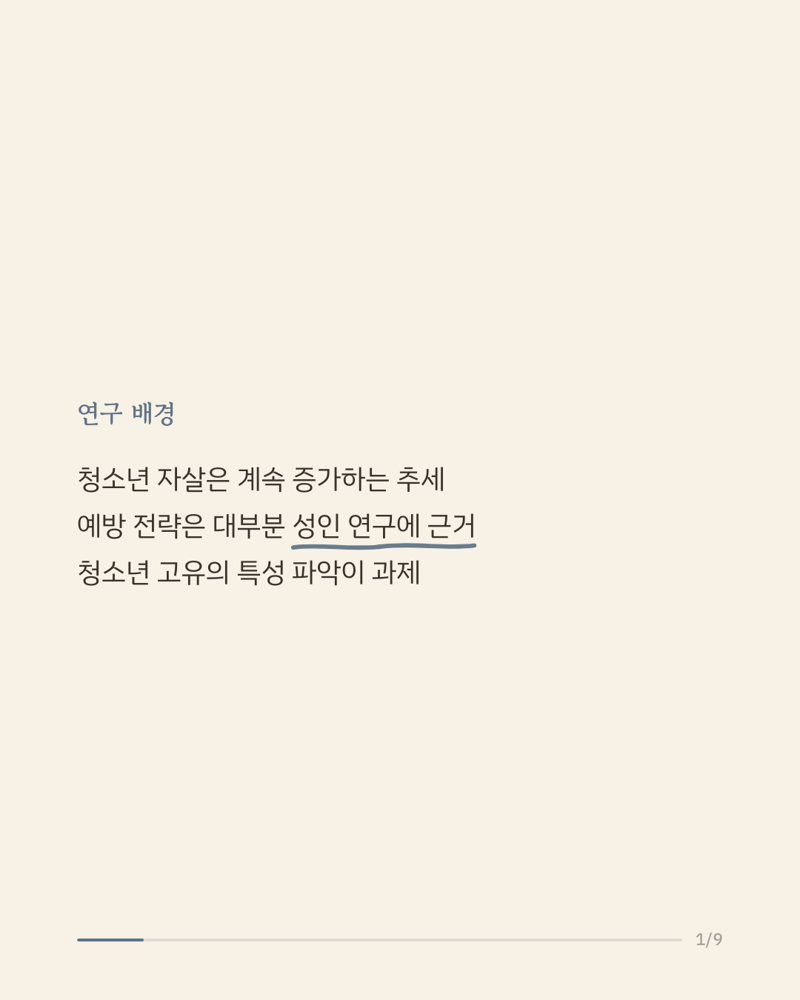
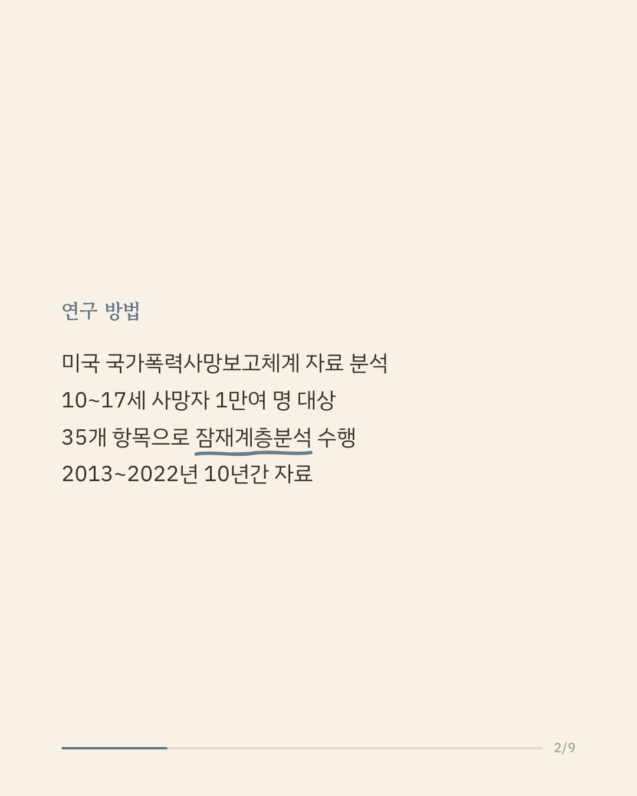
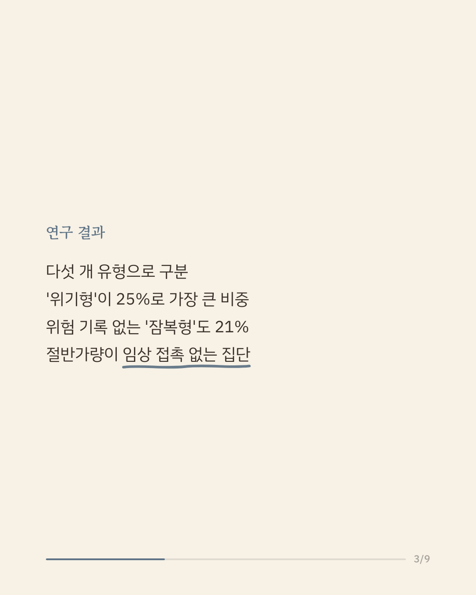
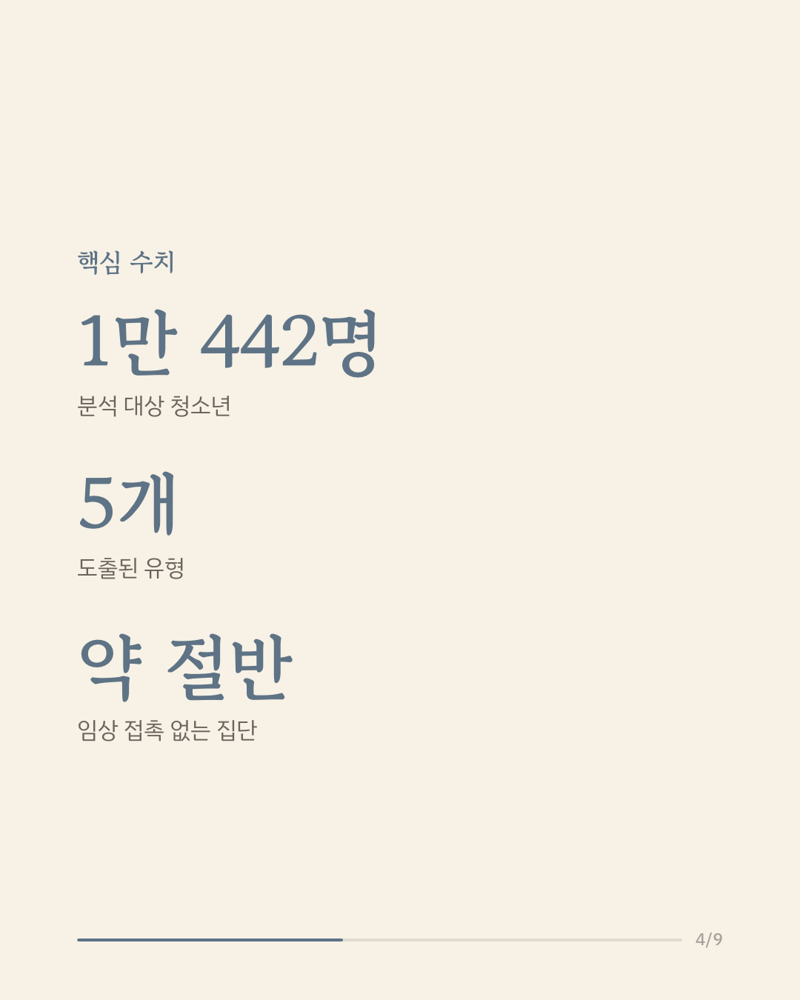
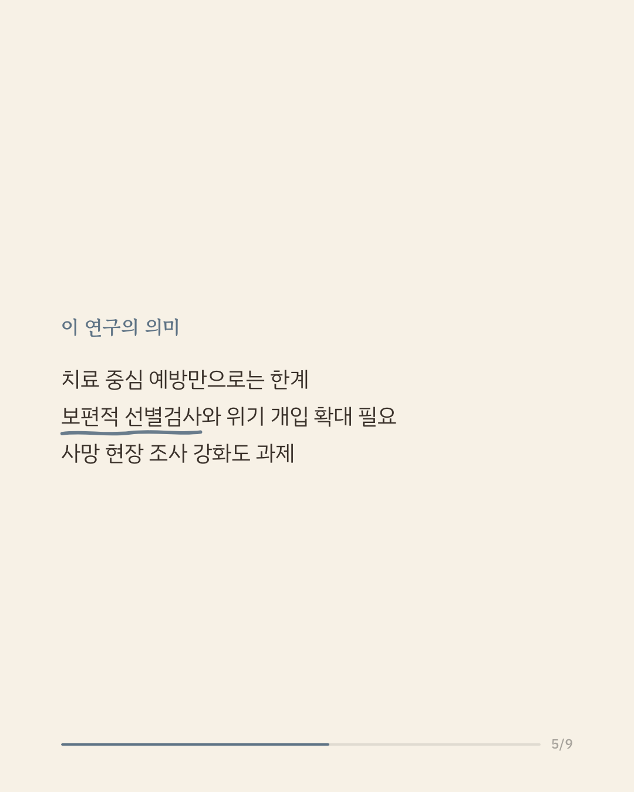
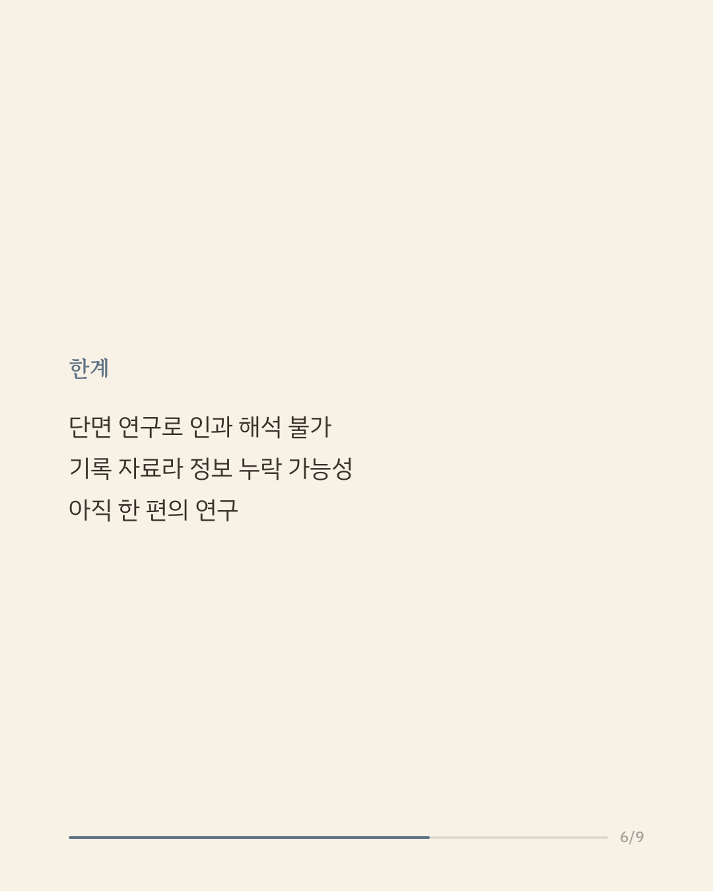
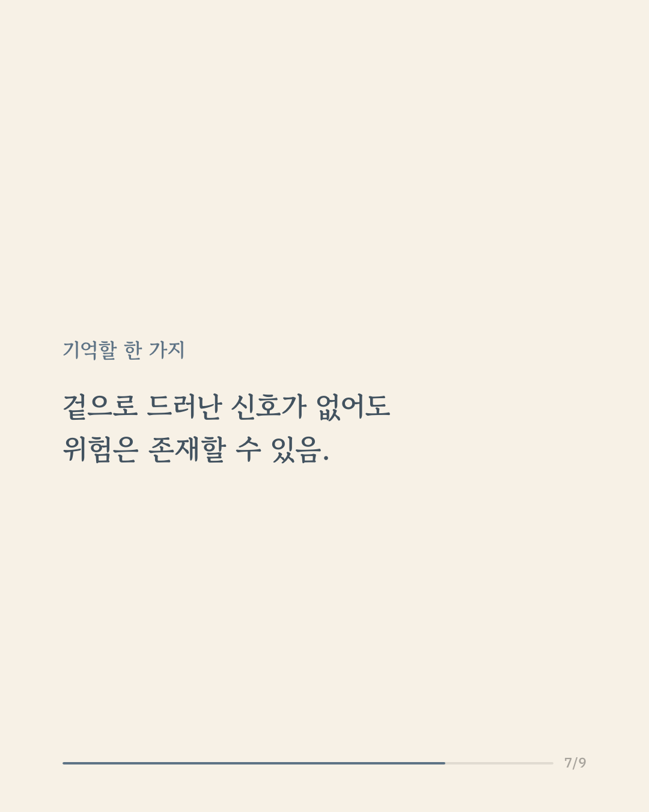
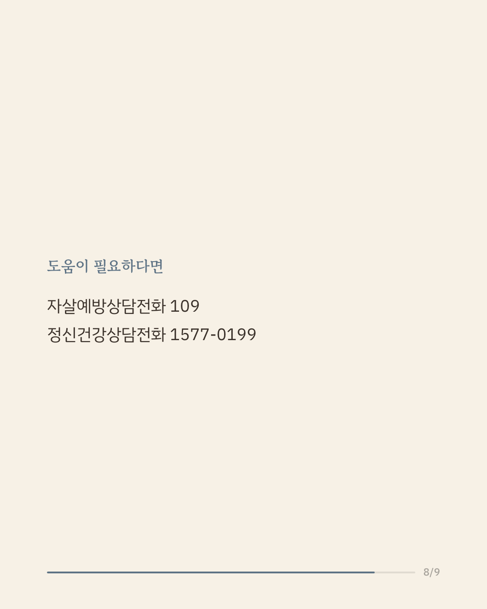
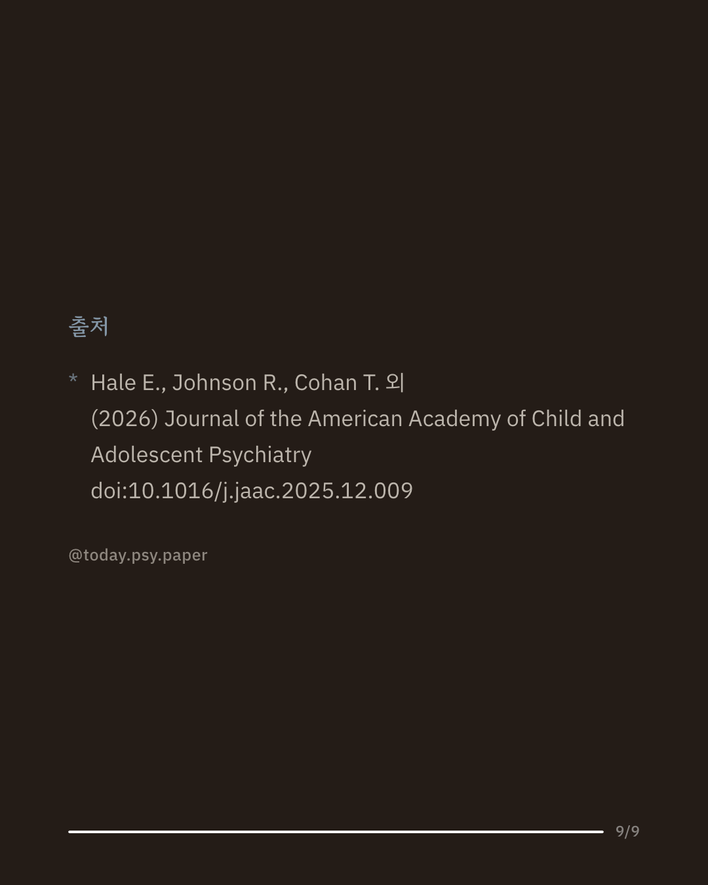

청소년 자살은 최근 계속 늘고 있지만, 예방 전략의 근거는 대부분 성인을 대상으로 한 연구에서 나온 것입니다. 청소년에게는 그들만의 특성이 있을 수 있어 연령에 맞는 접근이 필요하다는 지적이 이어져 왔습니다. 연구진은 미국 국가폭력사망보고체계에 기록된 10~17세 사망자 1만 442명(2013~2022년)의 자료 35개 항목을 잠재계층분석으로 살펴봤습니다. 분석 결과 다섯 개의 유형이 나타났습니다. 급성 대인·학교 위기를 겪었으나 이전 치료가 없던 '위기형'(25%), 시도·치료 기록과 최근 의사 표현이 있었던 '표출형'(12.6%), 기록된 위험 요인이 없던 '잠복형'(21.2%), 여성이 다수인 '확인형'(12.2%), 조사 자료가 광범위하게 누락된 '감시형'(29%)으로 나뉘었고, '감시형'의 비중은 2013년 22%에서 2022년 36%로 늘었습니다. 연구진은 치료 중심 예방만으로는 상당수 청소년에게 닿기 어렵다며 보편적 선별검사와 위기 지향 아웃리치, 사망 현장 조사 강화가 필요하다고 봤습니다. 다만 단면 연구여서 인과관계를 말하기 어렵고, 기록에 의존한 분석이라 정보 누락의 영향이 있을 수 있습니다. 단일 연구이므로 확대 해석은 조심해야 합니다. 출처: Journal of the American Academy of Child and Adolescent Psychiatry (2026), 'Typologies and Phenotypes of Youth Suicide Decedents' 힘든 마음이 들 때는 자살예방상담전화 109, 정신건강상담전화 1577-0199에서 도움을 받을 수 있습니다. #임상심리 #정신건강정보 #자살예방 #청소년정신건강 #심리학연구
python3 publish.py 41448487